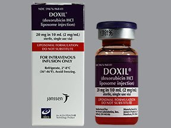

Nanomateriali so snovi, ki vsebujejo nanodelce. Nanodelec je delček snovi, ki je vsaj v eni dimenziji manjši od 100 nanometrov. Prisotni so marsikje in tako so našli svojo pot tudi v prečudovit svet medicine. V današnjem svetu odkrijejo več kot 1000 novih snovi. Med njimi so tudi številni nanomateriali (na primer: Azbest, TiO2,...).
V medicini ima ta vrsta materialov zelo veliko uporabnost:
• Kostni implantati
• Razvoj zdravil
• Ciljana dostava
zdravilnih učinkovin
• Zdravljenja raka
• Medicinski
pripomočki
• Diagnostični testi
• Biodetekcija
patogenov
• Fluorescentni
biološki označevalci
• Slikovne metode
Bolj poglobljen opis nanomaterilov si lahko ogledate na podstrani naše spletne strani "Nanotehnologija in kemija"

Kemoterapevtsko zdravilo